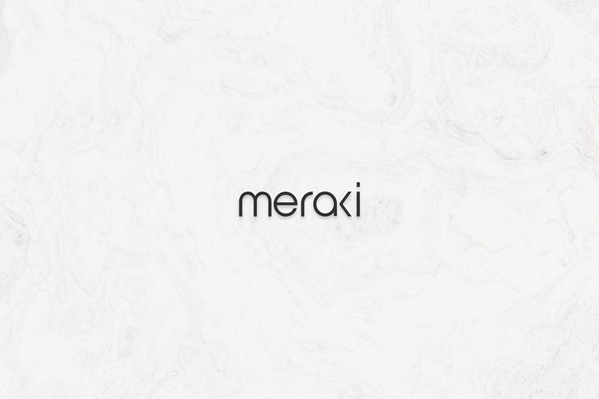
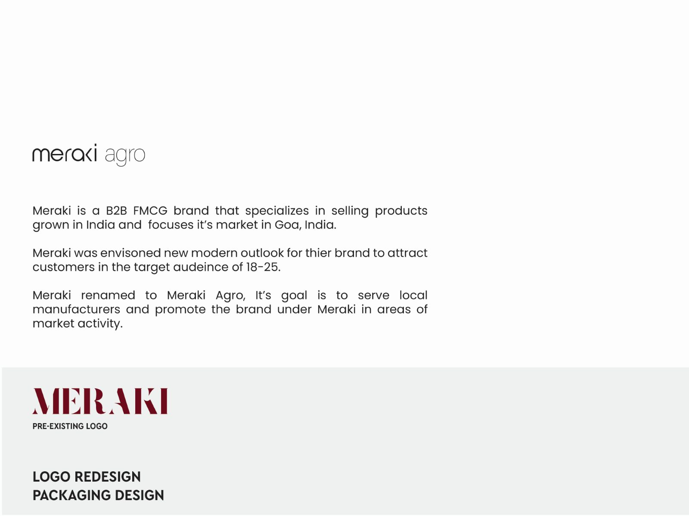
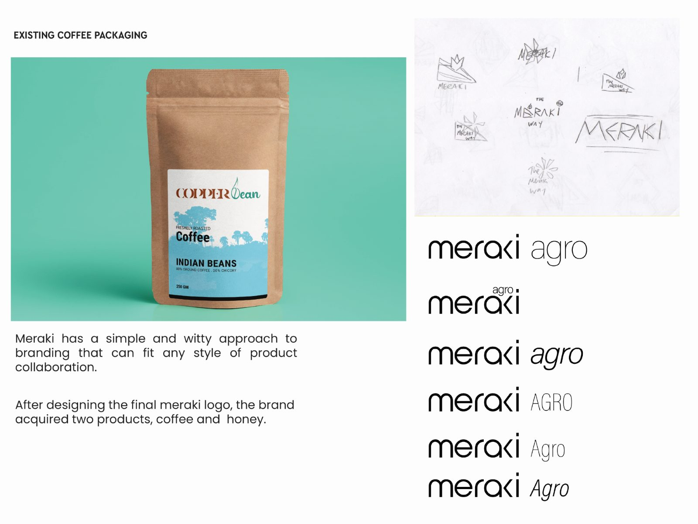
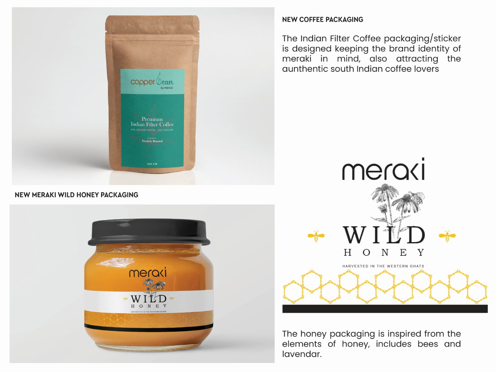

Meraki
Meraki is a B2B FMCG brand specialising in products grown in India, with its market focused in Goa. The rebrand was carried forward on new user data and the audiences the brand intended to reach — a modern outlook aimed at customers aged 18 to 25.
Rename first, then let the products arrive.
The pre-existing logo was a serif wordmark that placed the brand a generation older than the customers it wanted. Redrawn, Meraki became a light, wide, near-monoline wordmark — and renamed to Meraki Agro, with a goal of serving local manufacturers and promoting them under the Meraki name in their areas of market activity.
The system was built to be witty and simple enough to fit any style of product collaboration. That proved the point: after the final logo was designed, the brand acquired two products, and both could be carried under it without redrawing anything.
- Copper BeanIndian filter coffee. The packaging and sticker keep the Meraki brand identity while attracting drinkers of authentic South Indian coffee.
- Wild HoneyPackaging drawn from the elements of honey itself — bees and lavender — under the same wordmark.
Four spreads, front to back.




The Meraki wordmark also appears in Logofolio, alongside Swastha, Marin and Orinko.